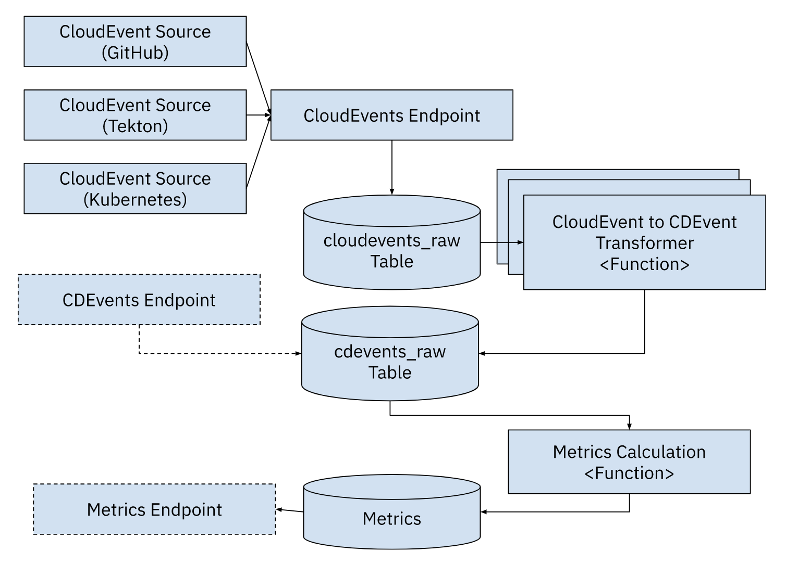

Four Keys + CDEvents for Kubernetes
This repo is based on GCP fourkeys and Using the four keys to measure DevOps performance.
This project was designed to consume Cloud Events and allow you to track the Four Keys from the DORA report all based on Kubernetes making it portable accross cloud providers.
Components
-
CloudEvents Endpoint: endpoint to send all CloudEvents, these CloudEvents will be stored in the SQL database to thecloudevents-rawtable. -
(Optional)
CDEvents Endpoint: endpoint to send CDEvents, these CloudEvents will be stored in the SQL database to thecdevents-rawtable, as they do not need any transformation. This endpoint validates that the CloudEvent received is a CD CloudEvent. -
CDEvents tranformers: These functions will read from thecloudevents-rawtable and tranform the CloudEvents to CDEvents only when apply based on the function's mapping. The results needs to be stored into thecdevents-rawtable for further processing. -
Metrics functions: These functions are in charge of calculating different metrics and store them into special tables, probably one per table. To calculate metrics these functions read fromcdevents-raw. -
(Optional)
Metrics Endpoint: allows you to query the metrics by name and add some filters. This is an optional component, as you can build a dashboard from the metrics tables without using the endpoints.

Installation
This project was created to consume any CloudEvent available and store it into a SQL database for further processing. Once the CloudEvents are into the system a function based approach can be used to translate to CDEvents which will be used to calculate the "four keys".
We will install the following components in an existing Kubernetes Cluster (you can use KinD):
Install Knative Serving Install Knative Eventing
Install PostgreSQL:
We use Helm to install postgresql on Kubernetes cluster.
After, install Helm add Bitnami helm repo:
helm repo add bitnami https://charts.bitnami.com/bitnami
Create a namespace in your cluster called four-keys:
kubectl create namespace four-keys
Install bitnami/postgresql helm chart on namespace four-keys.
helm install postgresql bitnami/postgresql --namespace four-keys
Use a port forwarding to access the application:
kubectl port-forward --namespace four-keys svc/postgresql 5432:5432
By default, the bitnami/postgresql chart creates a password, run this command to get it:
export POSTGRES_PASSWORD=$(kubectl get secret --namespace four-keys postgresql -o jsonpath="{.data.postgres-password}" | base64 -d)
To connect from outside the cluster:
PGPASSWORD="$POSTGRES_PASSWORD" psql --host 127.0.0.1 -U postgres -d postgres -p 5432
Creating all necessary tables (on default database postgres):
cloudevents_raw:
CREATE TABLE IF NOT EXISTS cloudevents_raw ( event_id serial NOT NULL PRIMARY KEY, content json NOT NULL, event_timestamp TIMESTAMP NOT NULL);
cdevents_raw:
CREATE TABLE IF NOT EXISTS cdevents_raw ( cd_source varchar(255) NOT NULL, cd_id varchar(255) NOT NULL, cd_timestamp TIMESTAMP NOT NULL, cd_type varchar(255) NOT NULL, cd_subject_id varchar(255) NOT NULL, cd_subject_source varchar(255), content json NOT NULL, PRIMARY KEY (cd_source, cd_id));
deployments
CREATE TABLE IF NOT EXISTS deployments ( deploy_id varchar(255) NOT NULL, time_created TIMESTAMP NOT NULL, deploy_name varchar(255) NOT NULL, PRIMARY KEY (deploy_id, time_created, deploy_name));
Install Sockeye:
Sockeye is a "Websocket based CloudEvents viewer."
kubectl apply -f https://github.com/n3wscott/sockeye/releases/download/v0.7.0/release.yaml
Add Cloud Event Sources with Kubernetes API Server Source:
kubectl apply -f api-serversource-deployments.yaml
Metrics
To get more info about metrics see GCP fourkeys metrics.
Deployment Frequency
We look for new or updated deployment resources. This us done by using the APIServerSource. The flow should look like:
API Server Source -> CloudEvent Endpoint (cloudevents_raw) -> CDEvent Transformation (cdevents_raw) -> Deployment Frequency Function (writes todeploymentstable)
Deployment Frequency Function: looks at the cdevents_raw table and counts Deployment CDEvents from different services.
Calculate buckets: Daily, Weekly, Monthly, Yearly.
This counts the number of deployments per day:
SELECT
distinct deploy_name AS NAME,
DATE_TRUNC('day', time_created) AS day,
COUNT(distinct deploy_id) AS deployments
FROM
deployments
GROUP BY deploy_name, day;
Deploy the four-keys components using ko for development:
cd four-keys/
ko apply -f config/
Create a new Deployment in the default namespace to test that your configuration is working.
Other sources and extensions
-
Accessing Tekton dashboard:
kubernetes port-forward svc/tekton-dashboard 9097:9097 -n tekton-pipelines -
Creating Cloud Events Controller:
kubectl apply -f https://storage.cloud.google.com/tekton-releases-nightly/cloudevents/latest/release.yaml -
ConfigMap:
config-defaultsfor -
Github Source: https://github.com/knative/docs/tree/main/code-samples/eventing/github-source